SHURE (シュアー）
アメリカのオーディオメーカー。MM型の特許所有者の一つであり、代表作はM44やV-15シリーズ。近年ではカナル型のイヤホンで成功し、オーバーヘッド型のヘッドフォンにも進出している。
MM型カートリッジを代表するブランドである。1960年頃にはすでに内外で高い評価を得ており、1970年代には、自社のカートリッジを持たないメーカーの中には、自社のレコードプレーヤーのカートリッジに、このブランドを選択するケースもあった（ラックス、ヤマハなど）。代理店はバルコム。なお伝統のある製品が多く、価格の変動がたびたびあり、時には本体価格は値上げ、交換針は値下げされたこともある。また同じ時期に値上げするモデルと値下げするモデルが混在することもある。1985年頃モデルの大量整理があった。同時に新規機種も投入されたが、かつてのようなロングセラーモデルにはならなかった。
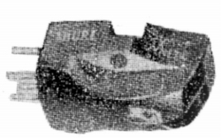
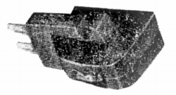
（1960年頃のMM型 左はM3D、右はM7D)
�T.カートリッジ
�@Mシリーズ
(1)Ｍ44シリーズ
現在も生産が続く、MM型の入門機種の定番モデル。ただし1990年代後半に、1度生産終了となった。
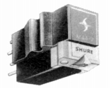
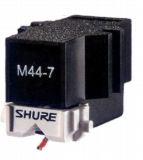
(左 旧モデルのM44-7 右 現行モデル)(2)Ｍ75シリーズ
1960年代から続く同社の中堅〜上位機種。1985〜86年頃終了。
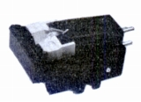
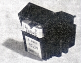
(左 M75G Type�U 右 M75E Type�U)M75-6 Type�U M75B Type�U M75G Type�U M75EJ Type�U M75E Type�U M75ED Type�U
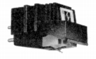
( M75HE Type�U)(3)Ｍ90番台シリーズ
1970年代にはいってから登場した同社の中堅〜上位機種。1985〜87年頃終了。
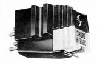
(M91ED)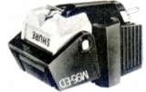
(M95ED)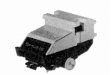
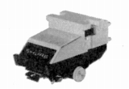
(左 M97B 右 M97HE)M97B M97GD M97EJ M97ED M97HE M97HE-AH
(4)SCシリーズ
1970年代後半にスタートした普及機〜上級機に至る製品群。普及機SC35Cを除き1987年に終了。
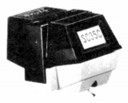
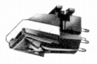
(左 SC35C 右 SC39EJ)(5)M100番台シリーズ
Ｍ75系やＭ90番台の整理と前後して1985年に登場した普及機〜中級機のシリーズ。T4Pで扱うM92EやM99Eも本来このラインの製品かもしれない。海外での流通はわからないが、国内では1987年頃姿を消した。
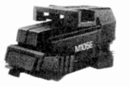
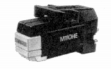
(左 M105E 右 M110HE)(6)MEシリーズ
1986年にスタートした普及機〜中級機の製品群。Ｍ75やＭ90番製品の後継機。
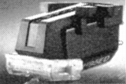
(ME95ED)(7)新Mシリーズ
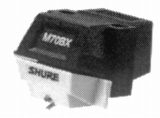
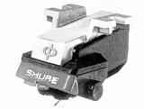
（左 M70BX 右 M97xE)(8)その他
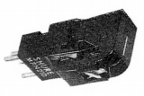
(M7/21D)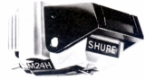
(M24H)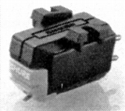
(DC40)�AV-15シリーズ
同社を代表する高級機シリーズ。1980年代後半に一時的に「ウルトラ」シリーズにトップを譲った。
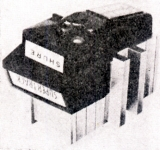
(V-15 Type�U)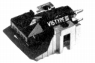
(V-15 Type�V)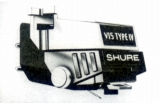
(V-15 Type�W)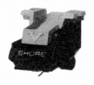
(V-15 Type�X)V-15 Type�X V-15 Type�X-MR V-15 Type�XxMR
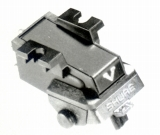
(VST �X）�BMLシリーズ、Ultraシリーズ
ラインナップの整理が行われたCDの本格的な普及期（1985年頃）登場の上級機シリーズ。結果として短命なモデルが多い。ML-HEモデルは1987年頃、終了。Ultra
500も1990年代前半に姿を消した。
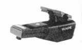
(ML140HE)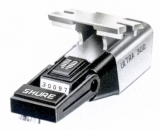
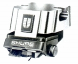
(左 Ultra 300 右 Ultra 500）�CT4P機種
初期にはM97、V-15系の強力な機種を用意した。しかし第2段は一転してローエンドモデルであった。
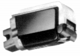
(V15LT)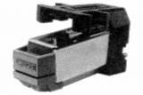
(M92E)＊Realistic/Shureダブルネームモデルについて
ShureはMM型の大手であり、さまざまなOEM提供も行っていたと思われる。そのうちの一つがRealistic/Shureダブルネームのカートリッジである。
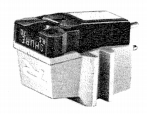
(スタイラスには「Shure」の文字が、ボディには「R」のイニシャルが入ったモデル）このダブルネームのカートリッジは、日本国内でも流通していたようだ。Realisticは、海外で良く見かけるブランドだが、実体はアメリカを中心としてアマチュア無線、Hi-Fi音楽機器を広く扱っていたタンディ・ラジオシャック（現 ラジオシャック、レディオシャックと表記される場合もあり）のプライベートブランドである。タンディ・ラジオシャックは1970年代には、日本国内でも新宿・調布で店舗を持っており、高級機は「Shure」を売っていたが、低価格機についてはダブルネームモデルを販売していたようだ。
当時の記事によれば、R700E(\7,000 楕円針）、R27E(\5,400 楕円針）、R47EB(\4,500 楕円針）、R25EC(\3,900 楕円針）、R7C(\2,800 円錐針）などがあったようだ。
�X.その他
針圧計とテストレコード。